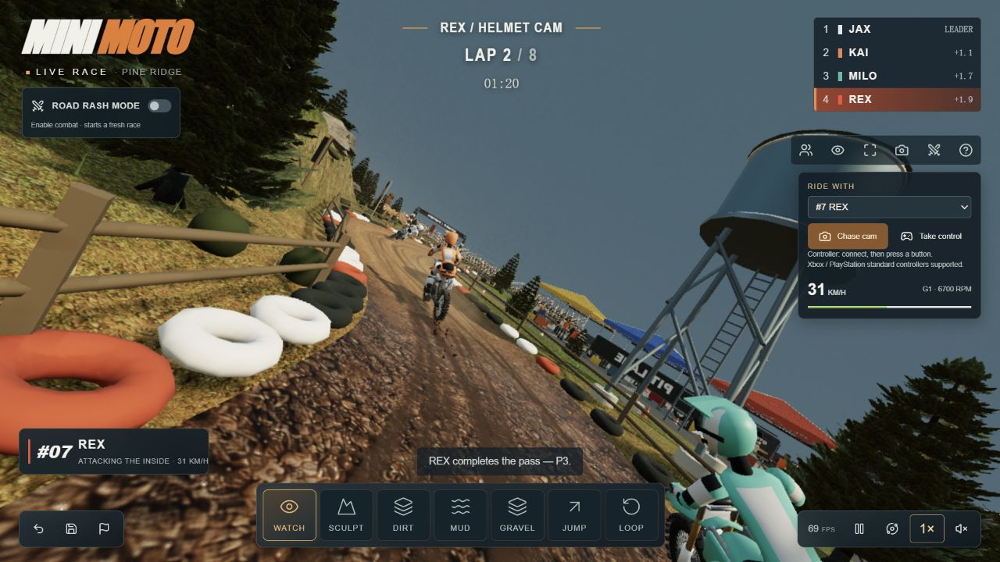

这条线路值得怎么讲？
面向景区策划与讲解人员，用全景看路线，用乘客视角看沿途体验。
项目核心 · 道路、地表与树木
从素材与规则，到参数和效果。
通过场景演示，验证能力如何复用。
本项目的核心意义沉淀道路、地表与树木的构建和表现能力。巡游与营地是验证场景，用来观察原理、调整参数、记录效果，为后续场景积累可复用的方法。查看能力汇总 →
新增 · 地表材质拆解实验 →左右对照：颜色、光照、法线、粗糙度与真实草叶；附可实现方案。 技术沉淀演示：一次构建，两处复用 →同一生成组件，生成环湖公园与山地营地。车辆正在按道路的方向、坡度与弯曲程度自主巡游。
金色框：建筑保守占地；青色圈：车辆保护范围。它们属于运动规则，表面贴图不参与阻挡。
正在读取两车位置
手动接管也不能穿越前车。当前为单车道约束与停车保护，尚无自由超车或撞击反弹。
把观察变成理解
实时观察 / 示例计算
道路高程与车辆位置 · 制动距离按当前速度计算，不含反应时间。
从演示到实际用途
先选一个要回答的问题，再修改场景，最后比较结果。这里已经具备可复用的路线采样、输入切换、天气联动和素材拆解；当前产出是交互原型与模型对照，还不是实测运营结论。
面向景区策划与讲解人员，用全景看路线，用乘客视角看沿途体验。
面向培训演示，联动湿润外观、目标车速和制动距离，解释参数之间的关系。
面向路线方案沟通，修改同一段高程，观察坡度、速度目标与车身姿态。
当前任务 / 自由探索
默认方案：原始道路、干燥、24 km/h 上限、均衡策略。下方对照读取当前参数，不使用预先写好的结果。
扩展方式：保留场景与输入机制，替换真实路线、车辆参数和任务内容。
回到场景操作 ↑尚未计算。
“最低目标车速”是沿线策略目标的最小值，不是平均速度。制动使用水平路面公式，不含反应时间；数值仅反映本页简化模型。
景区 / 园区导览
已有：路线巡游、多镜头、接管。
需补：真实地形与站点、讲解内容、路线选择和无障碍交互。
驾驶 / 应急培训
已有：湿滑联动、制动对照、人工输入。
需补：标定车辆、行人与障碍事件、完整碰撞、评分与回放。
场地改造沟通
已有：局部高程调整、坡度与运动联动、方案对照。
需补：测绘与工程规则、多方案管理、团队批注和版本审阅。
实时园区运营
可复用：三维展示与状态联动。
需新增：设备定位、传感器、时间同步、告警、权限与数据后台。目前没有接入真实设备。
素材的价值：可分离的模型与贴图让同一场景换外观、换细节等级，而不用重写运动逻辑。法线颗粒不会挡住车辆，粗糙度不会自动改变抓地，建筑的可见外形也必须另有占地约束。看素材档案与边界 ↗
来源与素材边界
原作提供了地形、行驶和镜头联动的参考。本页独立构建一座虚构山地公园，围绕观光车试行讲解，不使用原作的车辆、树木或地表素材。
